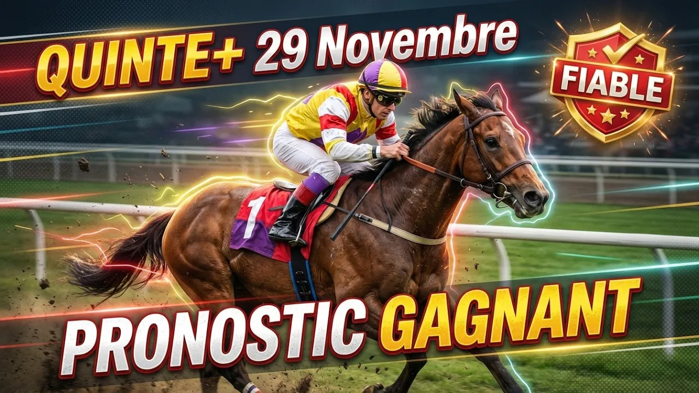

Ce dimanche 29 novembre, à 15h15 précises, les projecteurs de l'hippodrome d'Auteuil s'allument pour le Quinté+ : le prestigieux Prix François de Ganay. Une Course D1, handicap divisé première épreuve, seize partants de cinq ans et plus, 3 600 mètres de haies corde à gauche, 98 000 euros d'allocation dont 44 100 au vainqueur. Référence de +9,5 pour les plus chargés, +10,5 en dessous.
Sur ce tracé redoutable, le terrain lourd évalué à 4,7 par France Galop sollicite intensément les organismes : la combinaison entre la masse portée, l'équilibre dans le saut et la fraîcheur physique en cette fin d'automne constitue le socle de l'analyse. Auteuil ne récompense pas l'impatience — il récompense l'équilibre.
Disputée sur le gazon détrempé de la butte Mortemart, cette épreuve ne tolère aucune faute technique. Dès la libération des stalles, la meute s'élance vers la première haie pour se placer sans consommer. Ligne opposée, diagonale : chaque saut exige une élévation parfaite du centre de gravité et une réception fluide pour préserver la vitesse d'élan. L'effort atteint son paroxysme au second passage de la ligne d'en face et au tournant d'Auteuil.
Sur ce sol pénible, chaque battue d'appel demande une impulsion considérable des membres arrière. Un sauteur contraint de faire l'effort nez au vent accumule une dette d'oxygène fatale, qui paralyse sa relance après l'ultime haie — dans la longue ligne droite finale. C'est pourquoi, sur les haies d'Auteuil, la sagesse du pilotage vaut souvent autant que le talent du cheval.
Porter le top-weight sur 3 600 mètres en terrain lourd est un test d'endurance extrême. Le 1 Grand Art (hongre de 10 ans, J.Ph. Dubois / Clément Lefebvre) assume 72 kg à 61,5 de valeur — la plus haute classe théorique du lot, au prix de la masse. Le 2 Jost (70,5 kg) vient de se classer cinquième d'un handicap plus relevé avec valeur revue à la baisse. Le 3 Caligramme (70,5 kg, Léo-Paul Bréchet) reste sur une victoire éclatante à Nantes et aborde son premier Quinté avec de solides ambitions. Le 4 Moty Marc (70 kg) possède des titres au niveau des Groupes : outsider séduisant après deux courses de rentrée.
Le 5 Mon Petit Prince (69 kg, T. Chevillard/Gabriel Leenders) se présente comme la base incontournable de la presse : troisième d'un Quinté à Compiègne en terrain lourd, puis impressionnant lauréat à Auteuil sur 4 300 m, duo d'une régularité exemplaire. Le 6 Aulko (68,5 kg) enchaîne deux succès consécutifs en steeple et retrouve les haies confiant. Le 7 Liprika d'Anjou (67,5 kg, Félix de Giles) a remporté un Quinté sur ce tracé exact en octobre avant une deuxième place remarquée — cas rare du cheval qui connaît chaque balise. La jument 8 Karysmatika (67,5 kg, Kévin Nabet) fait ses débuts dans les handicaps avec une marge de progression impressionnante. Le 9 Tatoo (67 kg) effectue une rentrée mais possède des moyens avérés.
Le 10 Lestru (66,5 kg) bénéficie d'une baisse de trois kilos particulièrement avantageuse. Notre base, le 11 Parfum d'Une Reine (65 kg, H. Mérienne/Jordan Majorcryk) : la jument vient de prendre une magnifique deuxième place tout près de Mon Petit Prince sur les haies parisiennes, avec la fraîcheur idéale en fin de saison. Le 12 Magic Flight (64,5 kg, même entraîneur que Grand Art) cherche à rassurer — et voyage sans effort selon nos points de suivi. Le 13 Dinozaure (64 kg) a déjà gagné sur ce tracé exact. Le 14 Jumper Baie (63,5 kg) signe deux excellentes places sur les balais d'Auteuil. Le 15 Lou Fast (63,5 kg, Robert Collet) vient de s'imposer à Fontainebleau et reçoit le soutien du marché. Enfin le 16 The Must tentera de surprendre au bas du tableau.
Note du jour : le marché parisien des haies n'est pas encore totalement formé — seuls une dizaine de chevaux affichent une cote fiable à la rédaction (Grand Art 5,2 · Mon Petit Prince 4,6 · Liprika 5,2 · Lou Fast 5,2 · Aulko 6,5 · Karysmatika 10,4). Privilégiez la lecture de la presse et du plateau de charges.
| N° | Cheval | Jockey | Entraîneur | Musique | Poids | Cote |
|---|---|---|---|---|---|---|
| 1 | Grand Art | C. Lefebvre | J.Ph. Dubois | 5p3p1p4p4p(25)5h2h6p9p | 72 | 5,2 |
| 2 | Jost | L. Philipperon | M. Seror | 5h4h5h(25)7s4s7h3s5h3s | 70,5 | — |
| 3 | Caligramme | L.P. Bréchet | D. Mele | 1h9s3h7s1h(25)1s5hAs | 70,5 | — |
| 4 | Moty Marc | E. Bonnet | F. Bellemere | Ah3h(25)TsTs2s1sTs5h4h | 70 | — |
| 5 | Mon Petit Prince | T. Chevillard | Gab. Leenders | 1h3h2s3s3h2h2h(25)5h5h | 69 | 4,6 |
| 6 | Aulko | M. Bars Hugonot | G. Juillet | 1s1s2h2h0h5h0h(25)9h1h | 68,5 | 6,5 |
| 7 | Liprika d'Anjou | F. de Giles | H. Mérienne | 2h1s1h0h2h7h5s(25)5sAs | 67,5 | 5,2 |
| 8 | Karysmatika | K. Nabet | E. Allaire | 5h5h(24)1h | 67,5 | 10,4 |
| 9 | Tatoo | B. Le Clerc | F. Bellemere | 0h6h5h1h(25)Ah0h2h4hAh | 67 | — |
| 10 | Lestru | A. Duvacher | M. Seror | As2s5s7hThThAh(25)4h2h | 66,5 | — |
| 11 | Parfum d'Une Reine | J. Majorcryk | H. Mérienne | 2h8h(25)5h8h4h4hTh8s1s | 65 | 52 |
| 12 | Magic Flight | T. Vabois | J.Ph. Dubois | Ah0hAh0p1p4h0p(25)Th0h | 64,5 | 52 |
| 13 | Dinozaure | Th. Journiac | M. Rolland | 0hAh2hAh1h(25)AhAh3h4h | 64 | — |
| 14 | Jumper Baie | N. Ferreira | R. Schmidlin | 4h3h9h0h0h4h6h3h1h3h | 63,5 | — |
| 15 | Lou Fast | T. Beaurain | R. Collet | 1h8h7s5s0h0h0h7h7h9h | 63,5 | 5,2 |
| 16 | The Must | T. Lemaire | G. Menato | 7h9h7s0h5h8h1h1hAh5h | 63,5 | 52 |
Musiques codes h (haies), s (steeple), p (plat) · « — » = cote non encore formée à la rédaction.
Première clé — la gestion de l'effort. Sur une piste aussi pénible, une débauche d'énergie en tête épuise le souffle avant l'ultime tournant. Les jockeys expérimentés garderont leur monture bien cachée : les cotes de l'effort se règlent en fin de parcours.
Deuxième clé — la fluidité du saut. Un cheval qui saute avec précision économise plusieurs mètres par obstacle face à un rival hésitant. D'où l'avantage stratégique des réguliers de la discipline : Parfum d'Une Reine, Liprika d'Anjou, Mon Petit Prince.
Troisième clé — la fraîcheur. Fin novembre, les chevaux exploités toute l'automne le paient. La jument Parfum d'Une Reine, fraîche et venue de finir à un nez du favori, porte exactement le profil qui arrose ce genre d'épreuve. C'est notre base.
Parfum d'Une Reine, la fraîcheur et la deuxième place tout près du favori : première base, à la charge la plus douce duo très haut. Liprika d'Anjou, le spécialiste du tracé vainqueur en octobre avec Félix de Giles. Magic Flight, voyagé en douceur par Dubois. Aulko, enchaîneur steeple revient confiant, et Tatoo, les moyens avérés derrière une rentrée en demi-teinte. Lou Fast alimente le marché depuis Fontainebleau, Lestru bénéficie de sa remise de poids et Karysmatika démonte ses débuts avec de la marge.
Base : 11 Parfum d'Une Reine
Top 5 : 11 - 7 - 12 - 6 - 9
Synthèse presse : favoris Mon Petit Prince (5) & Grand Art (1) pour la charge, Liprika (7) et Parfum d'Une Reine (11) pour la ténue
Couplé Placé :
11 Parfum d'Une Reine et 7 Liprika d'Anjou avec 12 Magic Flight, 6 Aulko et 9 Tatoo
Deux sur Quatre :
11 - 7 avec 12 - 6 - 9 - 15
Multi en 5 :
11 - 7 - 12 - 6 - 9
Quinté+ Ordre :
11 - 7 en piliers avec 12 - 6 - 9 - 15 - 10 - 8 en associés
Comme toujours à Auteuil, lisez la course en trois temps. Le premier tour : observez le comportement de Parfum d'Une Reine et Liprika d'Anjou devant la piste lourde — ceux qui sautent léger le long des premiers obstacles ont déjà gagné la moitié de la course. La sortie de diagonale : voyagé ou en peine, Magic Flight et Aulko vous donneront la hiérarchie réelle. L'ultime ligne droite après la dernière haie : la tenue de Tatoo et de Lou Fast dira ce que la charge a pesé sur chacun — lorsque la dette d'oxygène est payée, il ne reste plus que le galop.
Retrouvez l'analyse vidéo complète sur notre chaîne YouTube Bravo Turf. Abonnez-vous, activez la cloche des notifications et laissez un pouce bleu si ce décryptage vous aide.
Jouez avec modération
Un dimanche reste un dimanche. Ne misez jamais plus que ce que vous pouvez vous permettre de perdre. Fixez-vous un budget hebdomadaire et tenez-vous-y. En cas de difficulté, consultez Joueurs Info Service au 09 74 75 13 13.